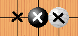
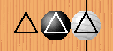
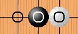
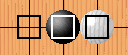
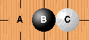
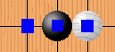
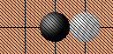
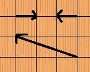
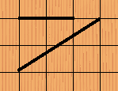

![[SGF FF[4] - Smart Game Format]](../images/head.gif) last updated: 1999-12-12
last updated: 1999-12-12
|
last updated: 1999-12-12
|
Version: 1.2
|
Author: Arno Hollosi <ahollosi@xmp.net> Feedback welcome! Published under the OpenContent License. | Still unanswered questions?
Go to the Discussion Forum |
SGF is a file format used to store game records of two player board games. It is a text-only tree based format, i.e. it doesn't contain binary data and thus can easily be emailed or posted to newsgroups. Tree based means, that starting from a root one can follow a main path or switch to variations (or variations of variations).
SGF provides many features such as board markup, comments, game information, setup positions etc. In order to create a good SGF file one should have some knowledge of the internal structure of SGF.
(;FF[4]GM[1]SZ[19]AP[SGFC:1.13b] PB[troy]BR[12k*] PW[john]WR[11k*] KM[0.5]RE[W+12.5] DT[1998-06-15] TM[600] ;B[pd];W[dp];B[pq];W[dd];B[qk];W[jd];B[fq];W[dj];B[jp];W[jj] ;B[cn]LB[dn:A][po:B]C[dada: other ideas are 'A' (d6) or 'B' (q5)] ;W[eo](;B[dl]C[dada: hm - looks troublesome. Usually B plays the 3,3 invasion - see variation];W[qo];B[qp] ... ;W[sr];B[sk];W[sg];B[pa];W[gc];B[pi];W[ph];B[de];W[ed];B[kn] ;W[dh];B[eh];W[se];B[sd];W[af];B[ie];W[id];B[hf];W[hd];B[if] ;W[fp];B[gq];W[qj];B[sj];W[rh];B[sn];W[so];B[sm];W[ep];B[mn]) ... (;W[dq]N[wrong direction];B[qo];W[qp]))
As no program is perfect and SGF is evolving it's strongly recommended to update one's favorite SGF application at least once a year. Right now many people still use applications that are over five years old which causes a lot of trouble.
Update your application on a regular basis!
A node is the smallest unit visible to the user, i.e. the user steps through the tree node-wise (forward [down the tree], backward [up the tree], etc.).
A node consists of properties. These properties contain a certain kind of information, e.g. the B[] property describes a black move made, the C[] property contains a comment text (don't worry: you don't have to remember the property names :-).
For example: if you step forward and see a new move on the board and a comment in the comment window plus some markup on the board then all this information is represented by different properties which are parts of the same node.
Thus editing is done in two levels: adding/deleting nodes and adding
or deleting properties.
To make it clear: a move is part of a node and not the node part of the
move. A move is represented by one property but a node may contain
more than one property.
Placing a stone on the board is like setting up a position, e.g.
handicap stones, setting up a problem or analysis of positions ("this
would work if the position over there would look like this...").
Thus one can place more than one stone, stones of different colors,
remove stones, replace stones with that of the opposite color
all in one node.
But: there are no prisoners made as these are not regular moves!
Therefore it's illegal to mix setup properties and move properties within the same node.
Move properties are properties such as a black or white move,
annotations on a move (bad move, interesting move, etc.) or how
much time a player had left after the current move was made.
Setup properties are properties used to set up or describe a position
such as place black/white stones on the board or who's turn it is to play.
A detailed list of setup and move properties is available.
Unfortunately many applications allow mixing setup and move properties, so it's up to the user to create a good SGF file.
Applications show variations as either siblings or children. Showing variations as children means, that if the applications is currently at move #3 (like in the picture) it provides you the choice of 'A' through 'C' which are all move #4. That is, by selecting a variation, you step forward in the tree.
Showing variations as siblings means, that the application provides the variation choice at move #4. In this case, selecting a variation selects between moves at the same tree level (here: #4 moves). This method is perceived as alternatives to the current move and by e.g. selecting variation 'B' move #4 'A' is removed from the board and move #4 'B' is shown.
The differences between this two styles may cause confusion when the variations are accompanied by comments. For example, imagine the comment saying something like: "This is bad. See variation 'B' instead." If the author used a children-style application this comment is stored together with move #3. If readers use a sibling-style application, they see the comment on move #3, but no variations: they appear with the next move. The other case (author: sibling style, reader: children style) has similar implications. Users who read the comment at move #4 have to go back one move and select the variation there.
Most people prefer the sibling style as it seems more natural. They even
imitate the sibling style in children-style applications. This is done
by removing the previous move and making a new move in the same (first) node
of the variation. This is bad style. Since FF[4] it's illegal
syntax too. If you have a look at the picture you see that all alternative
moves are at the same level (that is, all #4's are in one column, all #7's are
in one column). By imitating the sibling-style in chlidren-style applications
this is no longer the case, as the #4 moves of variation 'B' and 'C' would
appear under move #5 of variation 'A'. Furthermore those
files cannot be converted to other fileformats easily. If you like sibling-style
variations then use a sibling-style application!
| Markup | Property | Notes |
|---|---|---|
|  | MA[] | Very common (introduced in FF[3]) |
|  | TR[] | Very common (introduced in FF[3]) |
| simple markup | M[] | old (FF[1]), very common This markup has been superceeded by MA[] and TR[], however very old applications still use M[] and don't understand MA[] and TR[]. |
|  | CR[] | common (introduced in FF[3]) |
|  | SQ[] | common (introduced in FF[4]) |
|  | LB[] | common (introduced in FF[3]) Old applications can't display it (e.g. MS-DOS MGT) Note that long labels consisting of multiple chars are possible. However many applications only display the first 2 or 3 characters - use long labels with care. |
| letters | L[] | old (FF[1]), very common This markup has been superceeded by LB[], however very old applications (e.g. MS-DOS MGT) still use L[] and don't understand LB[] |
|  | SL[] | old, uncommon |
|  | DD[] | new (FF[4]), very uncommon (may become more common in the future) |
|  | AR[] | new (FF[4]), very uncommon (may become more common in the future) |
|  | LN[] | new (FF[4]), very uncommon (may become more common in the future) |
| Annotation | Property | Type | may be emphasized? | Meaning |
|---|---|---|---|---|
| Good for Black | GB | General | yes | Something good for black |
| Good for White | GW | General | yes | Something good for white |
| Even position | DM | General | yes | The position is even |
| Unclear position | UC | General | yes | The position is unclear |
| Hot spot | HO | General | yes | An important node (e.g. game deciding move) |
| Tesuji | TE | Move | yes | The move played is (locally) a good move |
| Bad move | BM | Move | yes | The move played is bad |
| Doubtful move | DO | Move | no | The move played is doubtful |
| Interesting move | IT | Move | no | The move played is interesting |
| Black to play | PL | Position | no | It's black turn to play |
| White to play | PL | Position | no | It's white turn to play |
Unfortunately not many applications support these properties yet. This will hopefully change in the future. Consider using annotation properties whenever possible. They have many advantages despite their simplicity.
Note that some entries have a mandatory format. Why?
Because standard compliant entries can easily be parsed by applications
and therefore can be searched in game collections or displayed in your
favorite (customized) scheme. Unfortunately many applications allow the
user to enter illegal information - so it's up to you to create correct
entries - please take care!
E.g. consider that you've got a game collection of about 5000 pro games and want to look for games played by Cho Chikun in March 1996. Now if dates are stored as e.g. DT[5th March 1996], DT[11/3/96], DT[1996/3/7], DT[1996 6 8] - do you really know which of these games were played in March?
| Name | Property | Notes |
|---|---|---|
| Black/white name | PB[]/PW[] | Name of the player who played black/white Try to be consistent in using names - for professional players it's suggested to use the same names as Jan van der Steen in his database. |
| Black/white rank | BR[]/WR[] | Strength of the player who played black/white Recommended format: "10k" or "10 kyu" for a kyu player "3d" or "3 dan" for a dan player Go servers usually add a `*' (certain rating) or `?' (uncertain rating) e.g. "10k*" |
| Black/white team | BT[]/WT[] | Name of the team (for games played in team events) |
| Result | RE[] | Final result of the game Mandatory format: "0" (zero) for a draw (jigo) "B+score" for a black win and "W+score" for a white win, e.g. "B+2.5", "W+64" or "B+0.5" "B+R"/"B+Resign" and "W+R"/"W+Resign" for a win by resignation. You MUST NOT write "Black resigns"A more detailed description is available. |
| Komi | KO[] | Score adjustment (points added to White's score) Mandatory format: Use real values, e.g. "5.5", "0", "0.5" or "-10," etc. Don't use: "5 points", "half a point", "5 1/2", etc. |
| Handicap | HA[] | Number of handicap stones Mandatory format: Use integer values greater zero, e.g. "1", "5" or "9" Don't use: "2 stones", "three" |
| Time | TM[] | Regular playing time for each side Mandatory format: Time is given in seconds as a real value, e.g. "4600", "300" Don't use: "1 hour"It's a little bit awkward if your application doesn't transform the real value into a somewhat more human-readable form. But please use real values! |
| Date | DT[] | Date when game was played Mandatory format: Use the ISO-standard format "YYYY-MM-DD"
Do not use other separators such as "/" or " " or ".".
Example: a game played on the 5th March 1997
would be encoded as: 1997-03-05
A more detailed description is available.
|
| Event | EV[] | Name of event (e.g. tournament name) |
| Round | RO[] | Number of tournament round |
| Place | PC[] | Name of place (e.g. city, country) where game took place |
| Rules | RU[] | Name of rule set used (e.g. Japanese, Chinese, AGA, GOE, etc.) |
| Game name | GN[] | Name of the game |
| Opening | ON[] | Describes the opening played (e.g. san-ren-sei) |
| Game comment | GC[] | General comment about the game |
| Source | SO[] | Name of the source (e.g. book, journal, etc.) |
| User | US[] | Name of user (or program) who entered the game record |
| Annotation | AN[] | Name of the person who made the annotations |
| Copyright | CP[] | Any copyright information |